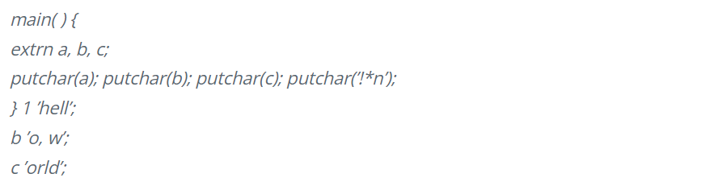
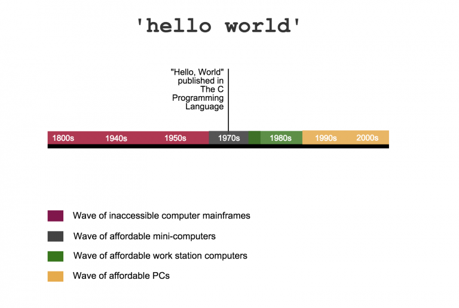

Post on 1 Dec 2022 | 5 min read
Almost every programmer's journey starts with the hello world program. But the question in the mind of beginner programmers or developers is why so this is used right? Today I will explain those things in this blog post.
It’s the most famous program. Known as the first example in nearly every programming language for every programmer, where did this message come from?
As a function, the computer program simply tells the computer to display the words “Hello, World!” Traditionally, it’s the first program developers use to test systems. For programmers, seeing the two words on the screen means their code can compile, load, run and they can see the output.
It’s a test, signifying a start to a program. Over the past several decades, it’s grown to become a time-honored tradition. All programmers that have come before you have, at some point, felt the same rush of adrenaline after realizing they successfully communicated through the computer. Here’s how the two most famous words in the history of programming first began:
Brian Kernighan, author of one of the most widely read programming books, "C Programming Language", also created "Hello, World". He first referenced ‘Hello World’ in the C Programming Language book’s predecessor: A Tutorial Introduction to the Programming Language B published in 1973.

Unfortunately, the legend himself can’t definitely pinpoint when or why he chose the words “Hello, World.” When asked what sparked the idea for the name “Hello, World” in interview with Forbes India, he said his memory’s dim.
“What I do remember is that I had seen a cartoon that showed an egg and a chick and the chick was saying, “Hello, World.”
At the time, neither Kernighan nor his colleague Dennis Ritchie, the late author of the C language, could imagine just how monumental the language and the tutorial book would be in the field of programming today. These ideas were nothing but a research project inside Bell Labs, the research and development branch of AT&T. Although no one can scientifically explain why “Hello, World,” grew to become wildly popular, the “Hello, World” program marks a major change in the historical rhetoric of programming. Let’s look at its historical context.
It’s hard to imagine today, but before “Hello World” was published in Kernighan’s book, computers carried a negative connotation among the public before the 1970s. They were massive mainframes, incredibly slow, filled an entire room and needed a full staff of scientists or researchers for maintenance. In fact, before the late 70s, computer scientists programmed using stacks of punch cards!

People generally saw computers as untouchable, complex and ridiculously expensive devices reserved only for the elite in academia, defense or the government. In fact, the industry titans who devoted their lives to the world of computing worked hard to overcome this stigma. It’s amazing to think how we’ve come from then. Today some people actually feel anxiety when they don't have their personal devices.
One of the first famous uses of computers in the US was back in 1890 when the Automatic Electrical Tabulating Machine calculated data for over 60 million Americans. In the 1940s, the Bombes and Colossus computers decrypted German codes during World War II.
The 1950s welcomed the first commercial computers, like the Zuse 3 and UNIVAC, for arithmetic operations. But you would need millions of dollars to actually buy one.
From an educational standpoint, most of all the programming language books about the earlier programming languages, like FORTRAN or BASIC, started off by proving a point: Computers are, in fact, useful. This is according to Algorithmist and Researcher John Mount. Mount says the explosive popularity of “Hello, World” released computer scientists from the burden of justifying why computers are good to the rest of society.
For instance, in the 1964 book My Computer Likes Me When I Speak Basic, the introduction talks about the purpose of programming languages in general. Plus, the first example outputs: “MY HUMAN UNDERSTANDS ME.”
Using this example aims to reinforce the unpopular idea that humans can, in fact, talk to computers. The 1956 Dynamic Programming kicks off with examples that can be applied to ordinary calculus. It wasn’t until The C Programming Language when “Hello World” really took off.
One major catalyst that sparked the spread of ‘Hello World’ was the parallel introduction of the PDP-11, one of the first commercial success of microcomputers. Digital Equipment Corporation (DEC) sold over 600,000 units of the PDP-11 total at about $10,000 each. This price point was drastically lower than the millions of dollars computers typically cost.
Plus, the PDP-11 16-bit series didn’t require punch cards. It was the first time you could use a programming language to directly talk to a computer. But in order to boost public acceptance, DEC didn’t refer to it as a computer. It marketed it as “Programmed Data Processor” to disassociate the product from the mainframe computers of the past. As more people purchased programmable computers, more people read C Programming Language, and thousands of people were re-introduced ‘Hello World.’
Almost every programmer who worked on desktop software in the 80s and 90s thereafter owned a copy or referenced the book. Millions of copies have sold to date.
There were probably many different basic programs to start with. But ‘Hello World’ is, by far, the most famous today. Every programmer remembers their first ‘Hello World’ as a rite of passage. Many might not realize it, but each time a programmer feels the sweet feeling of triumph in clearing the first hurdle of programming with the words ‘Hello World,’, they're experiencing a moment that transcends history.
Original Post | Refrence